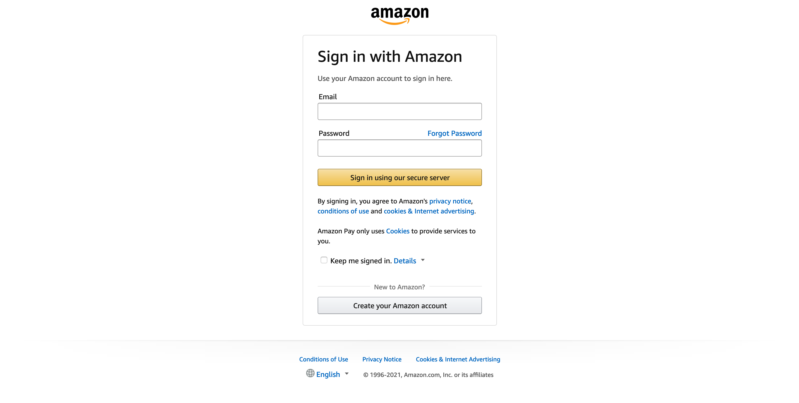

Order & payment workflow¶
Amazon Pay button button¶
The Amazon Pay button appears in several places in the shop
- on the shipping step of checkout
- on the cart page
- on the minibasket
- on product pages depending on Configuration
Pressing the Amazon Pay button launches the Amazon authentication window, where the customer is asked for their Amazon user account credentials.
After a successful login the customer is redirected to the checkout
Placing an order¶
The Amazon Pay checkout uses the standard Magento 2 checkout however it replaces certain forms with widgets that populate the data the forms would have requested.
On the shipping step of checkout the address form is replaced with a shipping widget

On the payment step of checkout payment methods are replaced by a payment widget

Note
In instances where the billing address is not exposed such as within the US region the shipping address will be used to populate the billing address
The actual order flow other than this remains the same, as it is for the standard Magento 2 checkout.
Payment authorization¶
An authorization is automatically requested on order placement there are 3 authorization flows, Synchronous, Asynchronous and a combination of both as defined in Configuration.
Synchronous¶
The customer will get instant feedback there are 3 possible outcomes
- Authorization OK - Order is placed with a state of Processing, Customer is redirected to the standard Magento 2 confirmation screen
- Soft Decline - Order is not placed and customer is asked to select an alternative payment instrument from the Amazon Pay widget
- Hard Decline - Order is not placed, the Amazon Pay specific checkout will be left (widgets are replaced by standard forms) and the customer is asked to select an alternative payment method for this order
Asynchronous¶
Orders placed when in Asychronous mode should always complete as if authorization was OK however they will be in a Pending state with a Payment Review status.
The customer will always be redirected to the standard Magento 2 confirmation screen as authorization state will be processed by Amazon Pay after the order is placed.
A status update on the state of the authorization will be delivered by IPN or Cron depending on Configuration there are 3 possible outcomes of this process
- Authorization OK - Order moves to state Processing
- Soft Decline - Authorization is closed, customer is emailed with a link to select an alternative payment instrument on the Amazon Pay website. When the customer changes the payment instrument, a new authorization is raised
- Hard Decline - Authorization is closed, customer is emailed with instructions to contact the merchant
Payment capture¶
Orders placed when in Charge on Order mode will automatically be captured. For orders placed using Charge on Shipment you will need to raise an invoice. To do this, the following steps are required:
- Login to the Magento 2 admin
- Open the order for which you want to capture payment and click the Invoice link located in the top row. Please make sure that the payment you want to capture has an open authorization transaction and is in the Processing state.
- Submit the invoice form ensuring the Capture Online option above the Submit Invoice button is selected
Warning
It is vital that Capture Online is selected as otherwise Amazon Pay will not be instructed to capture the payment, resulting in you not receiving any funds.
In case there is a problem taking the payment, a notification will be added to Magento 2 to make you aware there has been a problem.
Payment refund¶
The order, which payment has been captured for, can be refunded either fully or partially. Refunds are made against invoices and thus having a paid invoice assigned to the order is a necessary condition that has to be met to refund any order item.
Refunds in Magento 2 are recorded as credit memos, so for requesting a refund with Amazon Pay you should create a credit memo first. To create a credit memo login to the Magento 2 admin, open the order you want refund, click Invoices tab on the left, select an invoice you want to refund and click on it.
A preview of the selected invoice will appear. Make sure that you are on the single invoice preview page and click the Credit Memo button.
A new credit memo form will appear with most of the crucial data (like product quantities to be refunded) already filled in.
If you want to refund the invoice partially (i.e. only a part of the invoiced items) adjust the product quantities to be refunded (set 0 for items that shall not be refunded) and click Update Qty’s button to update refund totals. You can also set the refunded items back to stock by checking Return to Stock checkbox.
Next choose if you want to refund shipping costs or apply any refund adjustments and fill in the appropriate fields. Before submitting the credit memo form, double check that you have Refund button available and click it. A credit memo will be created and a refund will be requested with Amazon Pay.
Refunds will always be initially accepted as the vast majority of the time there will be no issue. However, if there is a problem after the refund has been issued, a notification will be added to Magento 2 to make you aware there has been a problem refunding the customer.
Warning
Always use the Refund button available on the new credit memo form invoked from the single invoice preview page. If you click Credit Memo button directly on the order page you will be redirected to the new credit memo form with Refund offline button only, which will appear to be successful. However it will not notify Amazon Pay and the customer will not receive their refund.